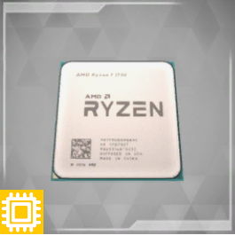
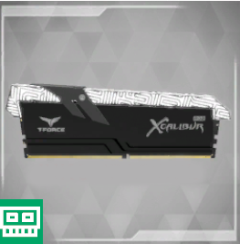
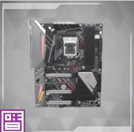
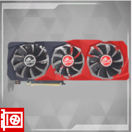
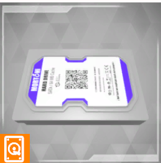
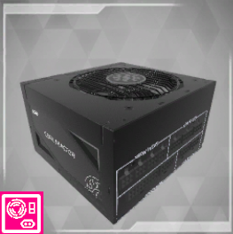

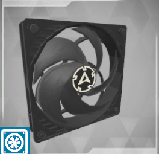
|
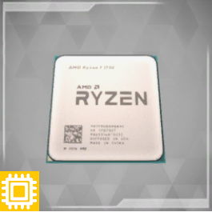
|
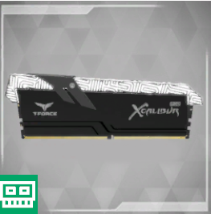
|
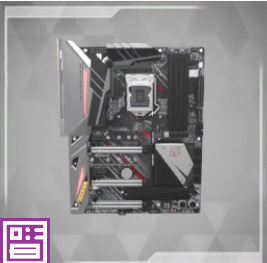
|
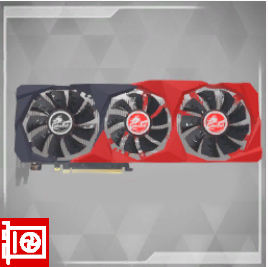
|
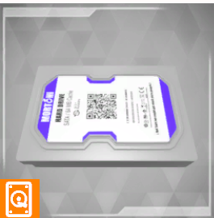
|
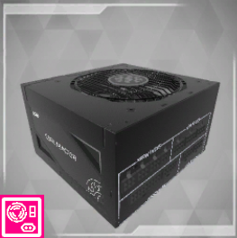
|
|
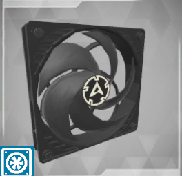
|
Was ist eine Motherboard?
In einfachen Worten ist ein Motherboard (auch Hauptplatine genannt) das Herzstück eines Computers. Es ist eine große Platine, auf der verschiedene wichtige Teile des Computers miteinander verbunden sind. Das Motherboard sorgt dafür, dass diese Teile miteinander kommunizieren können.
Auf dem Motherboard findest du Steckplätze für den Prozessor (Gehirn des Computers), den Arbeitsspeicher (kurzfristiges Gedächtnis), die Festplatten oder SSDs (langfristiger Speicher), und viele andere Dinge wie USB-Anschlüsse, Grafikkartensteckplätze und mehr.
Es ist sozusagen die "zentrale Schaltstelle", die es ermöglicht, dass alle Teile des Computers gut zusammenarbeiten. Wenn du dir vorstellst, dass ein Computer ein Körper ist, dann ist das Motherboard wie das Skelett, das alles zusammenhält und die verschiedenen Teile miteinander verbindet.
CPU-Sockel:
|
Intel-Sockel: |
|||||
|
LGA 1200: |
Aktuell (Stand 2022) für Intel-Core-Prozessoren der 10. und 11. Generation. |
LGA 1700: . |
Eingeführt für Intel-Core-Prozessoren der 12. Generation (Alder Lake) |
||
|
AMD-Sockel: |
|||||
|
AM4: |
Für Ryzen-Prozessoren der 1., 2., 3., und 5. Generation sowie für einige Athlon- und APU-Modelle. |
sTR4 / sTRX4: |
Für High-End-Desktop-Prozessoren (HEDT) von AMD, wie Threadripper-Modelle. |
AM5: |
Zukünftiger Sockel für kommende AMD-Prozessoren (Stand 2022). |
|
Intel-Server-Sockel: |
LGA 3647: Für Xeon-Prozessoren der Scalable-Familie. |
||||
|
AMD-Server-Sockel: |
SP3: Für EPYC-Serverprozessoren. |
||||
|
ARM-Sockel: |
Verschiedene Sockeltypen, je nach Hersteller und Modell. ARM-basierte CPUs werden in einer Vielzahl von Geräten eingesetzt, darunter Smartphones, Tablets und eingebettete Systeme. |
Welche Arten von Motherboards / Formfaktoren gibt es ?
Das Motherboard-Formfaktor bestimmt die physische Größe und Anordnung der Komponenten. Gängige Formfaktoren sind ATX, Micro-ATX und Mini-ITX.
Maße von verschiedenen Formfaktoren
|
Mini ITX |
170 x 170mm |
|
Micro ITX |
244 x 244mm |
|
ATX |
305 × 244mm |
|
E-ATX |
305 × 330mm |
RAM-Steckplätze:
Motherboards haben Steckplätze für den Arbeitsspeicher (RAM). Die Anzahl der Slots und die unterstützten RAM-Typen variieren je nach Modell.
Erweiterungssteckplätze:
PCIe-Steckplätze ermöglichen den Anschluss von Erweiterungskarten wie Grafikkarten, Soundkarten und Netzwerkkarten.
I/O-Anschlüsse:
Input/Output-Anschlüsse umfassen USB-Ports, HDMI, Ethernet, Audioanschlüsse und mehr.
BIOS/UEFI:
Das Basic Input/Output System (BIOS) oder das Unified Extensible Firmware Interface (UEFI) ist für die Initialisierung und Konfiguration von Hardware während des Startvorgangs verantwortlich.
Onboard-Grafik und -Audio:
Einige Motherboards verfügen über integrierte Grafik- und Audioprozessoren, was den Einsatz dedizierter Grafik- und Soundkarten überflüssig macht.
Stromversorgung:
Das Motherboard empfängt Strom über einen ATX-Netzanschluss und verteilt ihn dann an andere Komponenten.
BIOS/UEFI-Update und -Flash:
Die Möglichkeit, das BIOS/UEFI zu aktualisieren, ist wichtig, um die Kompatibilität mit neuen Hardwarekomponenten sicherzustellen.
Overclocking-Unterstützung:
Einige Motherboards bieten Funktionen für das Overclocking von CPU, RAM und Grafikkarte, um die Leistung zu steigern.
Netzwerkfunktionalität:
Integrierte Netzwerkkarten (LAN) und manchmal auch WLAN-Module ermöglichen die Verbindung mit Netzwerken.
USB-C und Thunderbolt:
Moderne Motherboards können USB-C- und Thunderbolt-Ports für schnellere Datenübertragung und Geräteanschlüsse haben.
Sicherheitsfunktionen:
Motherboards können Sicherheitsfunktionen wie TPM (Trusted Platform Module) für sichere Datenübertragung und Boot-Prozesse bieten.
Hersteller- und Modellspezifika:
Unterschiedliche Hersteller und Modelle haben spezifische Funktionen und Qualitäten. Es könnte hilfreich sein, einige Beispiele zu nennen, um die Vielfalt auf dem Markt zu zeigen.